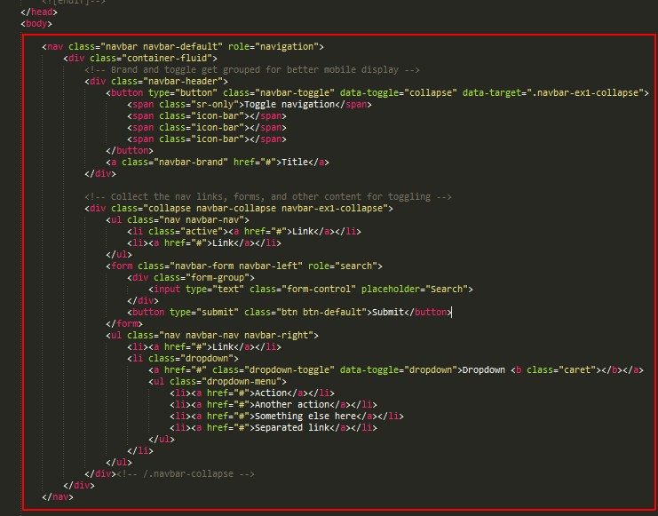
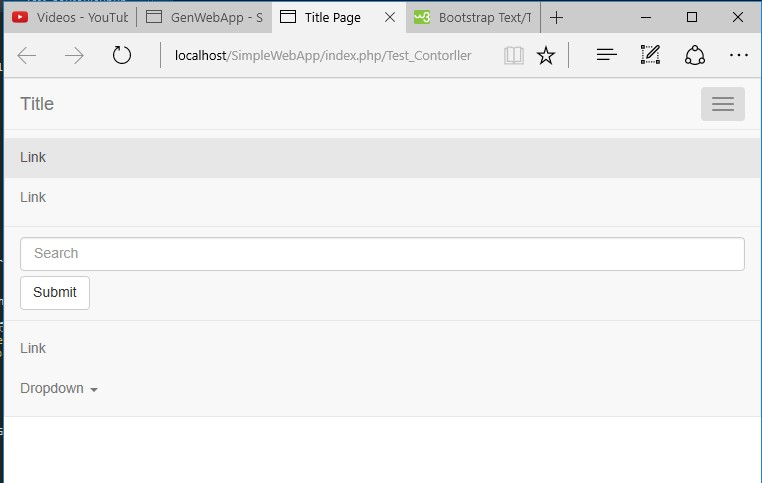
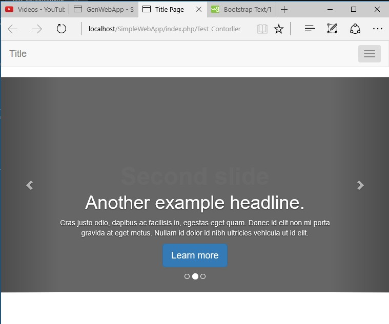
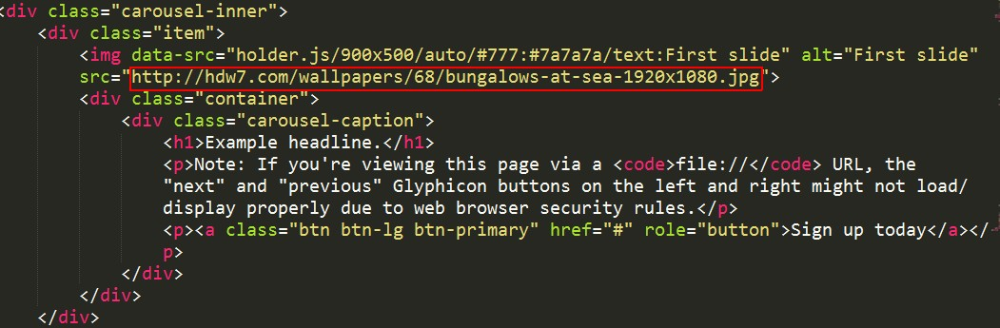
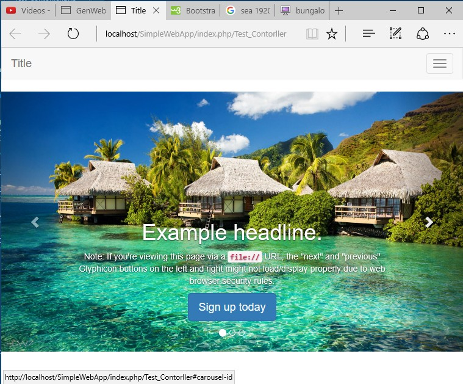

WebApplication คือ การพัฒนาระบบงานบนเว็บ ซึ่งมีระบบมีการไหลเวียนในแบบ Online (ออนไลน์) ออกไปยังเครือข่ายอินเตอร์เน็ต ทำให้เหมาะสำหรับงานที่ต้องการข้อมูลแบบ Real Time (เรียลไทม์) Lean More.
MVC Frameworks คือ สถาปัตยกรรมซอฟต์แวร์ชนิดหนึ่ง ซึ่งปัจจุบันมี Frameworks สำหรับสร้าง Web จำนวนมาก แต่เกือบทั้งหมดมีโครงสร้างแบบ MVC ซึ่งแต่ละระบบจะถูกแบ่งส่วนออกเป็นสามส่วน คือ 1. Controller เป็นส่วนที่มีการประมวลผลหลัก ของโปรแกรม และติดต่อกับ Database(ฐานข้อมูล) ด้วย Model และแสดงผลข้อมูลผ่านทาง View 2.Model ดูแลในเรื่องของการติดต่อสื่อสารระหว่าง Object และ Database โดยที่ผู้พัฒนาไม่ต้องยุ่งยากกับการใช้ SQL command 3. View เป็นส่วนที่ต้องแสดงผลผ่าน web browser Lean More.
CodeIgniter คือ framework ที่ถูกพัฒนาขึ้นด้วย ภาษา PHP สำหรับ CodeIgniter Framework เป็นเครื่องมือสำหรับช่วยพัฒนาเว็บไซต์และเว็บแอปผลิเคชั่น โดยมีโครงสร้างการพัฒนาโปรแกรมอย่างเป็นระบบและรวมคำสั่งต่างๆ ที่จำเป็นต่อการพัฒนาเว็บไซต์ด้วย PHP ใว้ภายใน CodeIgniter พัฒนาโดย Rick Ellis ซึ่งมีลิขสิทธิเป็น Open Source สามารถดาวน์โหลดและใช้ได้ฟรี ถูกพัฒนาขึ้นตั้งแต่ปี 2006 และยังมีการพัฒนามาเรื่อยๆ จนถึงปัจจุบัน Lean More.
ขั้นตอนต่อไปคุณจะต้องดาวน์โหลด CodeIgniter เพื่อใช้ในการสร้างเว็บเบื้องต้น คลิกเพื่อดาวน์โหลด CodeIgniter-3.1.4 http://www.codeigniter.in.th
คุณจะต้องดาวน์โหลด XAMPP และติดตั้ง XAMPP ลงบนเครื่องเพื่อจำลอง Server ในการรัน WebApplication เมื้อติดตั้ง XAMPP คุณจะได้ Apache และ phpMyadmin ด้วย .
Downloadคุณจะต้องดาวน์โหลด Sublime Text และติดตั้ง Sublime Text ลงบนเครื่องเพื่อใช้ในการเขียนโค้ดที่ง่ายและสะดวกขึ้น.
เมื่อคุณดาวน์โหลดและติดตั้งเครื่องมือเรียบร้อยแล้ว คุณสามารถเริ่มการสร้างเว็บแอพพลิเคชันได้.
อันดับแรกให้คลิก XAMPP Control Panel ขึ้นมาแล้วคลิก Start->Apache และ Start->MySQL
ให้ Coppy ไฟล์ SimpleWebApp ที่เตรียมไว้ไปที่ C:\xampp\htdocs
ให้เปิด Browser ขึ้นมาแล้วพิมพ์ที่อยู่โปรเจค http://localhost/SimpleWebApp
ดูวีดีโอตัวอย่างให้คลิก File -> OpenFolder แล้วเลือกที่อยู่ของโปรเจค C:\xampp\htdocs\SimpleWebApp
ให้คลิก File -> Newfile หรือ Ctrl+N แล้วคลิก File -> Save As หรือ Ctrl+Shift+S ตั้งชื่อไฟล์ Test_Contorller.php เลือกที่อยู่ไฟล์ C:\xampp\htdocs\SimpleWebApp\controllers แล้วคลิก Save
บรรทัดที่ 1 ทำการเปิดโค้ด php เพื่อให้คำสั่งทำงาน
บรรทัดที่ 4 สร้าง Class Test_Contorller และเรียกใช้คุณสมบัติ Contorller (ชื่อ Class ต้องตรงกับชื่อไฟล์)
บรรทัดที่ 7 สร้าง function index เพื่อเรียกใช้ View
บรรทัดที่ 9 เป็นการเรียกใช้หน้า View ที่ชื่อว่า Hello มาแสดง
เมื่อเสร็จแล้วกด Ctrl+S
ให้คลิก File -> Newfile หรือ Ctrl+N แล้วคลิก File -> Save As หรือ Ctrl+Shift+S ตั้งชื่อไฟล์ Hello.php เลือกที่อยู่ไฟล์ C:\xampp\htdocs\SimpleWebApp\views แล้วคลิก Save
บรรทัดที่ 1-2 ทำการเปิดโค้ด html เพื่อให้คำสั่งทำงาน
บรรทัดที่ 3-18 ตั้งค่าการเชื่อมต่อ API และกำหนดค่าการแสดงหน้า View
บรรทัดที่ 19-28 ส่วนหน้าจอแสดงผลลัพธ์
บรรทัดที่ 20 ประกาศตัวอักษรให้แสดง HelloWorld!
บรรทัดที่ 29 ปิดการคำสั่ง
Tipคีย์ลัดในการสร้างหน้า View กด Ctrl+Shift+P แล้วพิมพ์ bs3-html5-template แล้วกด Enter
เมื่อเสร็จแล้วกด Ctrl+S
ลอง Run การเรียกใช้หน้า View ของ Controller http://localhost/SimpleWebApp/index.php/Test_Contorller
ให้เปิดไฟล์ Hello.php ที่อยู่ไฟล์ C:\xampp\htdocs\SimpleWebApp\views
ว่างเคอเซอร์ใน body แล้วกด Ctrl+Shift+P แล้วพิมพ์ bs3-navbar-responsive แล้วกด Enter
เมื่อรันโปรเจคจะได้ผลตามนี้
ว่างเคอเซอร์ใน body ต่อจาก navbar แล้วกด Ctrl+Shift+P แล้วพิมพ์ bs3-carousel แล้วกด Enter
เมื่อรันโปรเจคจะได้ผลตามนี้ http://localhost/SimpleWebApp/index.php/Test_Contorller
นำลิงค์ http://hdw7.com/wallpapers/68/bungalows-at-sea-1920x1080.jpg ไปวางใน img src
เมื่อรันโปรเจคจะได้ผลตามนี้ http://localhost/SimpleWebApp/index.php/Test_Contorller
เปิด XAMPP Control Panel ขึ้นมาแล้วคลิก Start->MySQL เพื่อใช้สร้าง Database
ให้คลิก Admin->MySQL เพื่อเข้าสู้หน้าหลัก phpMyAdmin
ให้คลิก new เพื่อสร้าง database แล้วใส่ชื่อ database name ว่า store เสร็จแล้วคลิก create
ดาวน์โหลดไฟล์ คลิกที่นี้
ไปที่ phpMyAdmin คลิกเลือก Database store คลิก import คลิก Browse แล้วเลือกไฟล์ที่ดาวน์โหลด แล้วคลิก open เสร็จแล้วคลิก GO ก็จะได้ตารางข้อมูลใน Database
เข้าไปที่ C:\xampp\htdocs\SimpleWebApp\application\config เลือกไฟล์ชื่อ database แล้วเปิดขึ้นมาเพื่อตั้งค่า ดังนี้
'hostname' => 'localhost',
'username' => 'root',
'password' => '',
'database' => 'store',
เสร็จแล้วกด Save
สร้างไฟล์ชื่อ Product_Model.php แล้ว Save ไว้ที่ C:\xampp\htdocs\SimpleWebApp\application\models
บรรทัดที่ 1 เปิดคำสังการทำงาน php
บรรทัดที่ 3-18 เป็น class Product_Model ที่สืบทอดคุณสมบัติ CI_Model
บรรทัดที่ 5-10 เป็นฟังก์ชันการเชื่อมต่อกับเครื่องมือต่างๆ
บรรทัดที่ 8 เป็นการเรียกใช้การเชื่อมต่อ database
บรรทัดที่ 11-16 เป็นฟังก์ชันการร้องขอข้อมูลจาก database
บรรทัดที่ 13 เป็นการตั้งค่าตัวแปรเพื่อร้องขอข้อมูลที่อู่ในตาราง product จาก database
บรรทัดที่ 15 ส่งค่า return ค่าในตัวแปร product
เปิดไฟล์ Test_Contorller.php ที่อยู่ใน C:\xampp\htdocs\SimpleWebApp\application\controllers
บรรทัดที่ 1 เปิดคำสังการทำงาน php
บรรทัดที่ 9 ทำการเรียกใช้ Product_Model ในการติดต่อ Database
บรรทัดที่ 17 สร้างฟังก์ชันในการแสดงข้อมูลจาก Database
บรรทัดที่ 19 สร้างตัวแปร $data เพื่อับค่าจาก Product_Model ในฟังก์ชัน get_all_product
บรรทัดที่ 20 ทำการเรียกแสดงหน้า View product และส่งข้อมูลผ่านตัวแปร $data
บรรทัดที่ 20-43 สร้างบล็กเพื่อใส่ตางรางข้อมูลแบบ responsive
บรรทัดที่ 23-39 สร้างตางรางข้อมูลเพื่อใส่ข้อมูลจาก database
บรรทัดที่ 24-28 สร้างคอร์ลัม responsive
บรรทัดที่ 30 สร้างคำสั่งวนลูปเพื่อแสดงข้อมูล
บรรทัดที่ 21-39 สร้างแถวข้อมูลและตัวแปรที่แสดงค่าของข้อมูลจาก database